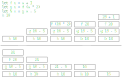
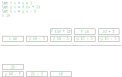

過去なんて振り返らずにいこう
bleis-tift
自己紹介

- id:bleis-tift / @bleis
- 2009年ごろからF#やってる
- ※ 今日が誕生日(37)
最近はまっていること
悲しいこと
- VAIO ZのSSDが壊れた
- Concealの未pushの諸々が消えた
- ※ 教訓: pushはこまめに
- 表示がおかしい部分は大目に見てください
本題の前に
関数プログラミング
- 数学っぽい関数が云々
- 引数と戻り値だけ
- 関数がファーストクラスなら、引数は1つでいい
- みんな大好きカレー
- シンプル！
もっと要素減らせない？
- 関数の戻り値: 呼び出し元に返る値
- 呼び出し元に戻るって過去っぽい
- 未来だけ見て生きていきたい
- 戻り値、やめよう！
- 今日はそういう話
本題
引数の関数について考える
let f g =
printfn "f"
g 10
// fにとって、引数に渡す関数は"未来"のこと
f (fun x ->
printfn "%d" x
)
引数の関数に結果を渡せば・・・？
- 戻り値、要らないのでは？？？
- やってみよう！
- 戻り値の代わりですし、
retと名前を付けます
(10 + 1) * 2
// 関数から戻りたい場合はretに値を渡す
// retに名前が付けられるの、Pythonのselfっぽさがある
let add1 x ret = ret (x + 1)
let mul2 x ret = ret (x * 2)
add1 10 (fun res ->
mul2 res (fun res ->
// (10 + 1) * 2
printfn "res=%d" res
)
)
できた！
何がうれしいの？
- 引数さえあればいい
- 戻り値ではこうはいかない(はず)
- 覚えることが減ってうれしい(か？)
- たのしい！
ここまでが長い前振り
ようやく本当の本題
- 「継続」というとても面白い考え方がある
- が、理解するのが大変
- 継続の面白さを伝えたい！
- まずはすぐに役に立つところから
継続渡しスタイル
- Continuation Passing Style(CPS)
- 最初に紹介したやつがまさにそれ
// 普通の書き方
let add1Normal x = x + 1
// 継続渡しスタイル
let add1CPS x ret = ret (x + 1)
何がうれしいの？
- 再帰関数を何も考えずに実装すると・・・
- StackOverflowException!
- 関数の呼び出しは「コールスタック」が必要
- でもコールスタックは固定
- 呼び出し階層が深くなりすぎるとオーバーフロー
- CPSで書くとこれが避けられる！
コールスタックのイメージ

- 計算が残る場合がある
関数呼び出しの出現パターン
- 計算が残らない場合
- 末尾位置で関数呼び出し
- 計算が残る場合
- 末尾位置以外で関数呼び出し
末尾呼び出しの最適化
- 計算がないんだったら、ジャンプでいいじゃん
- ジャンプでいいならコールスタック要らないじゃん
末尾呼び出しの最適化のイメージ

- スタックの山が低くなった
横道: 末尾とは
let f x = x + 1
let g x =
// これは末尾での関数呼び出し？
10 + f x
let h x =
use r = getResource ()
// これは末尾での関数呼び出し？
f x
横道: 末尾とは
- 「末尾」といってもコード上の話じゃない
- 関数を呼び出した後に計算が残らないところ
ここまでのまとめ
- 再帰関数はコールスタック溢れがち
- 末尾位置の呼び出しなら最適化できる
- (末尾はそこまで自明ではない)
- 継続の話はどこいった・・・？
継続の話
- どんな関数でもCPS変換すると末尾呼びになる
- 当然、再帰関数も例外ではない
- CPS変換できるようになると、SOは怖くない
- 正確にはまた別の問題があったりするが
CPS変換してみた
- 関数呼び出しがすべて末尾位置になっている
let f x k = k (x + 1)
let g x k = f (x * 2) (fun res -> k res)
let h x k = g x (fun res -> k (res - 5))
h 10 (fun res -> res)
CPS変換のやり方(1)
関数を呼び出さないもの:
引数 k に結果を渡すだけ
// 通常版
let f x = x + 1
// CPS変換した版
let f x k = k (x + 1)
CPS変換のやり方(2)
末尾位置で関数呼んでるもの:
呼び出し結果を引数 k に渡すだけ
// 通常版
let g x = f (x * 2)
// CPS変換した版
let g x k = f (x * 2) (fun res -> k res)
// こっちでも可
let g x k = f (x * 2) k // kを消してもいい
CPS変換のやり方(3)
末尾位置以外で呼んでるもの:
呼出結果を使って呼出後の計算を k に渡す
// 通常版
let h x = g x - 5
// CPS変換した版
let h x k = g x (fun res -> k (res - 5))
階乗の例
let rec fact x =
match x with
| 0 -> 1
| n -> n * (fact (n - 1))
階乗関数をCPS変換(1)
let rec fact x k = // kを追加
match x with
| 0 ->
// 関数を呼び出していない
1
| n -> n * (fact (n - 1))
階乗関数をCPS変換(2)
let rec fact x k =
match x with
| 0 -> k 1 // kに結果を渡すように変更
| n ->
// n * (fact ...)は
// 呼び出し結果を使っている
n * (fact (n - 1))
階乗関数をCPS変換(3)
let rec fact x k =
match x with
| 0 -> k 1
| n ->
fact (n - 1) (fun res ->
// 呼び出し結果を使って
// 呼び出し後の計算し、kに渡す
k (n * res)
)
Next Step
- 再帰関数のスタックオーバーフローを倒す話 その1
- 練習問題いっぱい
- なんでも継続
- 継続の入門に(未完・・・)
- shift/resetプログラミング入門
- 限定継続の入門に
余談
- F# 8.0から入った
TailCall属性 - 末尾呼び出しになっているかチェックしてくれる
- 末尾再帰であることは求めない(よね？)
- 試していない
まとめ
- 継続が好き
- 継続の入門にCPSどうでしょう
- F# 8.0試したい